Классическая механика: о диффурах «на пальцах»
Недавно взглянул на сорцы Farseer Physics Engine. Стало интересно как в этом движке реализован динамический объект. Как и ожидал, не встретил там привычных мне дифференциальных уравнений и их дискретных реализаций в виде разностных уравнений или дискретных моделей пространства состояний. Главная отмазказаявляемая причина отказа от «честной» механики во многих игровых физических движках — излишняя сложность работы с дифференциальными уравнениями и слишком большая вычислительная нагрузка.
Введение
В этой статье я продолжаю тему цифровой обработки сигналов. В ней я постараюсь простым языком рассказать о концепции игровой механики (физики) с использованием подхода на основе дифференциальных уравнений. В будущем я собираюсь оценить действительно ли реализация такого подхода приведет к резкому увеличению вычислительной нагрузки. В рамках этой статьи не получится — слишком большой объем. В этой я собираюсь описать назначение коэффициентов, входящих в математическую модель динамического объекта, описать их физический смысл, т.е. их влияние на поведение динамического объекта.
Начнем пожалуй…
Физический смысл
В своей статье про Фильтр Калмана я описал что такое уравнения вида «вход-выход», передаточная функция и операторная форма записи дифференциальных уравнений (см. раздел «Основные понятия» в [2]). Примером части математической модели динамического объекта в операторной форме записи может служить следующее уравнение:
(1) 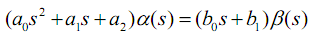
Это распространенная упрощенная модель динамических систем. Опережая напишу, что модель тела в движке "Farseer" использует урезанный аналог представленной выше модели (динамического звена второго порядка). Ниже представлено описание принятых в ней обозначений.
Представленное уравнение описывает динамическую систему типа «один вход — один выход» (SISO). Ее можно использовать для описания динамики объекта по одной из его степеней свободы. Как Вам, возможно, известно, у свободного тела есть шесть степеней свободы — три поступательные (линейное движение вдоль трех осей системы координат (СК) ) и три вращательные (повороты вокруг осей СК). Таким образом, полная модель физического тела будет описываться шестью такими уравнениями (или четырьмя для 2D случая). Вы сразу можете сказать, что уже это свидетельствует о слишком высокой сложности такого подхода. Но на самом деле в Farseer, к примеру, класс тела (Body) содержит и линейные координаты тела (по сути это пара α(s) по OX и OY), и линейные скорости (пара s*α(s) по OX и OY) и параметры ориентации и угловой скорости. Эти параметры обсчитываются раздельно для каждой из осей, т.е. количество уравнений такое же — два уравнения по оси OX (линейное и угловое движение) и два для оси OY. Разница лишь в форме уравнений.
Алгоритм в движке Farseer — приближенный и упрощенный, но позволяет работать с варьируемыми квантами времени. В функцию обсчета параметров движения (Island.Solve(ref TimeStep step, ref Vector2 gravity)) передается время, прошедшее после последнего обсчета параметров. Это позволяет при недостаточной производительности компьютера держать скорость течения игрового времени примерно постоянным в ущерб плавности и реалистичности движения игровых объектов.
При построении дискретной модели на основе диференциальных уравнений мы четко завязываемся на фиксированный квант времени. Уравнения интегрируются для изначально заданной частоты дискретезации, и если с момента последнего обсчета по какой-то причине прошло времени больше, чем заданный квант (в англоязычной литературе его называют «time sample»), то мы либо должны произвести обсчет несколько раз, либо получим замедление движения объекта. Последнее я как раз и наблюдал в игре "Command Cortex" на слабой машине. Движения акторов были плавными но медленными (акторы, управляемые человеком, получают преимущество). Таким образом, нельзя говорить об исключительном преимуществе одного из этих подходов.
Теперь о том, за что отвечают коэффициенты представленного выше уравнения. Это уравнение описывает движение физического тела относительно положения равновесия при α(s) = 0. Это еще одна из причин кажущегося неудобства применения такой модели в игровой механике. При отсутствии приложенных внешних сил данная модель рано или поздно возвратит (при условии устойчивости модели) тело в положение равновесия. Представьте игровой мир, наполненный шариками, которые все время стремятся в начало координат (например, в левый верхний угол экрана). К такому поведению приводит наличие коэффициента жесткости (см. а2 выше). Представьте, что тело соединено с началом координат пружиной. Пока на тело действуют силы, пружина растянута, но стоит убрать внешнее воздействие и тело устремится к нулю. Тела в движке Farseer таким поведением не обладают. Если мы зададим коэффициент a2 равным нулю, то и в данном случае тела не будут стремиться к началу координат (см. выше я писал, что модели в Farseer по сути урезанные варианты этой модели). Ну и зачем этот коэффициент тогда нужен, спросите Вы. Если раскрыть скобки в левой части уравнения (1) и вместо слагаемого
a2*α(s)
напишем
a2*(α(s) — α0)
то через α0 мы получим возможность задать положение, к которому игровой объект будет стремиться. Величина коэффициента а2 отвечает за то, насколько быстро тело переместится в заданное положение равновесия (чем больше значение, тем выше жесткость пружины). Как такое реализовывается в Farseer я пока не выяснил, но думаю придется создать дополнительный источник воздействия.
Теперь коэффициент a1. Это коэффициент демпфирования. Чем больше значение этого коэффициента, тем быстрее гасится скорость (линейная или угловая). Аналогия из жизни — вязкие жидкости, такие как масло, мед, эпоксидная смола. Эти жидкости очень вязкие (имеют большое значение коэффициента демпфирования). Чем выше скорость движения тела в них, тем выше сопротивление этому движения. Если медленно двигать в них ложку, например, то преодолеть сопротивление большого труда не составит, а вот если ударить с размаху, то удар будет жестким.
Величина коэффициента а0 характеризует инерцию объекта. При описании линейного движения в качестве коэффициента а0 используется масса. Чем выше его значение, тем медленнее тело набирает скорость при приложении к нему внешних сил.
Теперь о коэффициентах в правой части уравнения (1). Тут нужно заметить, что данная модель расширенная на случай, когда входное воздействие определяется не только самим значением внешней силы, но и ее изменением. Для описания динамики игровых объектов это, возможно, будет излишним. Однако в промышленных системах управление встречаются и такие модели. Каков же их физический смысл? Коэффициент b1 это по сути коэффициент передачи внешней силы вовнутрь объекта. Обычно он равен еденице, т.е. сила передается как есть.
Коэффициент b0 интересен. Он играет роль форсирующего коэффициента. Представьте очень инерционный объект, к которому прикладывают силу, плавно нарастающую со временем. Если скорость нарастания и конечная величина силы будут малы, то объект очень медленно набирать скорость. Но если силу сделать большой, то после достижения внешней силой заданного значения объект не остановится в каком-то положении, а будет колебаться под действием инерции. Форсирование — это воздействие, пропорциональное скорости нарастания внешней силы. Если мы выберем его большим, то даже при малой скорости нарастания внешней силы наш объект будет достаточно быстро набирать скорость, а когда внешняя сила достигнет заданного значения, форсирование отключится. Вот такой вот хитрый этот «b0».
Динамика в картинках
Чтобы наглядно показать влияние коэффициентов дифф. уравнения на поведение динамического объекта решил построить графики переходного процесса при ступенчатом (step response) и импульсном (impulse response) входных воздействиях. Всего представлено 6 групп графиков (по одной группе для каждого коэффициента). Графики построены в пакете Octave (v. 3.4) с установленным пакетом «Signal Processing».
Итак, в качестве исходной возьмем модель вида:
=========================================
>>> w = tf([1 1],[1 1 1])
Transfer function «w» from input «u1» to output…
y1: (s + 1)/(s^2 + s + 1)
Continuous-time model.
=========================================
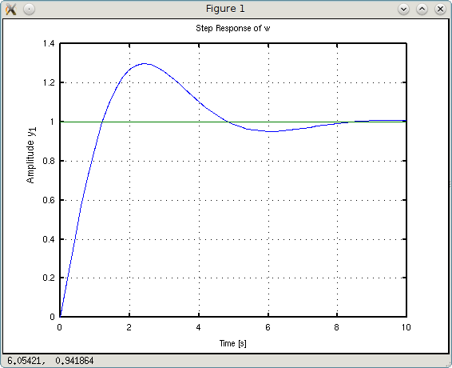
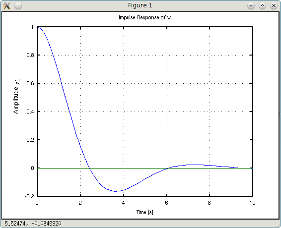
Код «w = tf([1 1],[1 1 1])» в символьном виде имеет вид:
>>> w = tf([b0 b1],[a0 a1 a2])
На скриншотах внизу-справа — примерное время стабилизации (коридором стабильности считаем ± 5% от заданной величины).
Попробуем поиграться с коэффициентом жесткости a2.
>>> w1 = 0.1*tf([1 1],[1 1 0.1])
y1: (s + 1)/(s^2 + s + 0.1)
>>> w2 = 10*tf([1 1],[1 1 10])
y1: (s + 1)/(s^2 + s + 10)
Примечание: пришлось подшаманить с коэффициентами усиления, чтобы результирующий коэффициент усиления был равен единице.
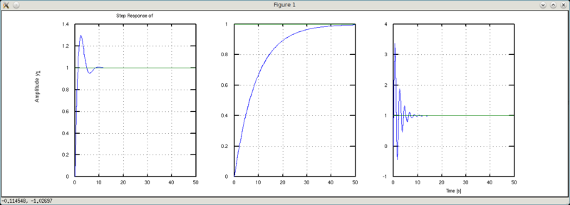
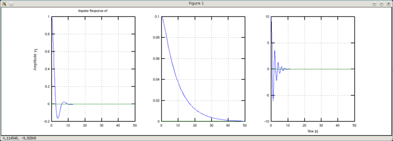
Что видно на графиках? Слева-направо представлены графики для w, w1 и w2, соответственно. Графики w1 более плавные и медленнее достигают установившегося значения. Графики w2 имеют более колебательный характер, но быстрее достигают установившегося значения. Вывод: жестче пружина — больше колебаний, но короче переходный процесс.
Попробуем поиграться с демпфированием (а1).
>>> w1 = tf([1 1],[1 0.25 1])
y1: (s + 1)/(s^2 + 0.25s + 1)
>>> w2 = tf([1 1],[1 2 1])
y1: (s + 1)/(s^2 + 2s + 1)
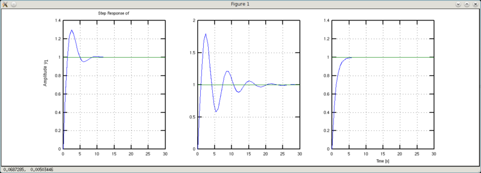
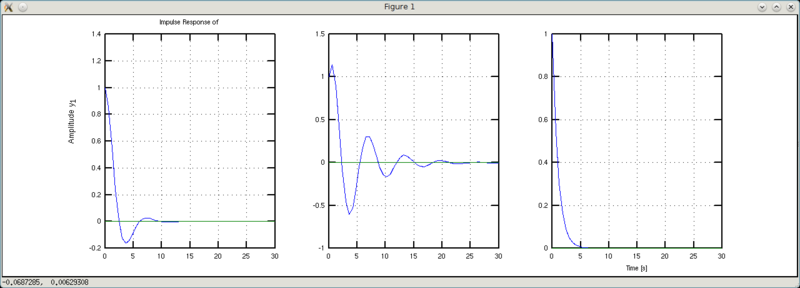
Сразу вывод: больше вязкость — быстрее затухают колебания.
Попробуем поиграться с инерцией (а0).
>>> w1 = tf([1 1],[0.1 1 1])
y1: (s + 1)/(0.1s^2 + s + 1)
>>> w2 = tf([1 1],[2 1 1])
y1: (s + 1)/(2s^2 + s + 1)
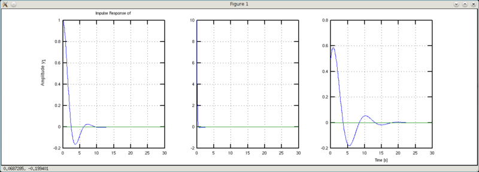
Вывод: меньше масса чугуняки — меньше болтанки и короче переходный процесс.
Перейдем к правой части и поиграемся с b1.
>>> w1 = 10*tf([1 0.1],[1 1 1])
y1: (10 s + 1)/(s^2 + s + 1)
>>> w2 = 0.25*tf([1 4],[1 1 1])
y1: (0.25 s + 1)/(s^2 + s + 1)
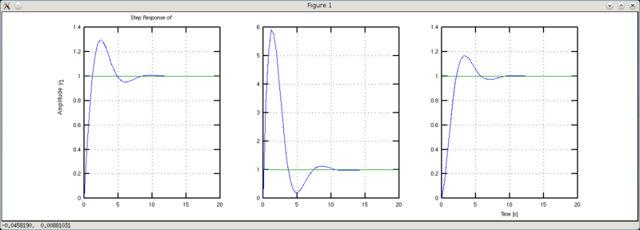

Вроде бы разница еле заметна, если смотреть на графики Step Response. Но на графиках Impulse Response хорошо виден эффект этого коэффициента. Если он равен единице, то график импульсного переходного процесса начинается с единицы (на самом деле он выходит из нуля, но не суть важно — второе значение в графике еденица). График w1 «начинается» со значения 10 (обратная величина от 0.1), а график w2 — начинается со значения 0.25 (обратное к 4). Таким образом, коэффициент b1 можно «обозвать» коэффициентом эффективности управления (входного воздействия).
И напоследок вкусненькое — игры с коэффициентом b0. Это хитрый коэффициент, потому и сравнение будет не таким как было выше. Чтобы показать его эффект придется варьровать несколько коэффициентов.
>>> w1 = tf([6 1],[1 1 1])
y1: (6 s + 1)/(s^2 + s + 1)
>>> w2 = tf([6 1],[1 3 1])
y1: (6 s + 1)/(s^2 + 3 s + 1)
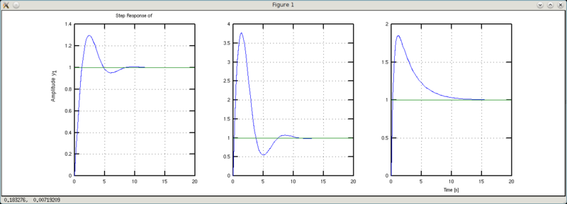
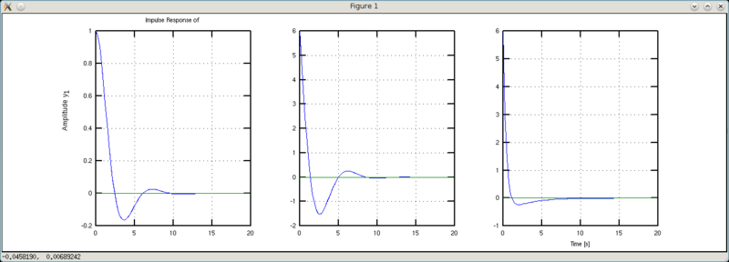
Чем отличаются друг от друга w1 и w2? У w2 в три раза больше коэффициент демпфирования. В результате получаем интересные выводы. Графики w1 и w2 раньше пересекают уровень установившегося значения чем дефолтный график. Однако график w1 сохраняет форму дефолтного с его колебательностью, а график w2 за счет увеличенного демпфирования более сглаженный. Таким образом, играясь с форсированием и демпфированием мы можем заставить даже чугунный утюг порхать по рингу как бабочка без колебаний туда-сюда.
На правах PS
В данной статье я рассматривал лишь положительные значения коэффициентов. Их положительность — необходимое условие устойчивости мат. модели. Однако можно попробовать поиграться и с отрицательными значениями. Неустойчивой системой также можно управлять. Вспомните о самолетах пятого поколения (например, наш Беркут). Обратная стреловидность крыла — это неустойчивый планер, но зато высокая маневренность. Автоматика способна скорректировать эту неустойчивость и при этом, когда нужно, закладывать крутые виражи.
Если получится, состряпаю игрушку, с которой можно будет наглядно увидеть все эти эффекты.
Источники